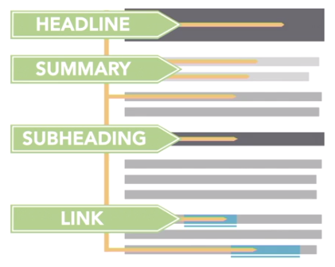

The most effective report titles are clear, specific, and direct. The textbook suggests following the four steps on the right to make sure you have a great title. You can read more about each step in the textbook.
Check the Advice on Your Working Recommendation Report Titles page with specific suggestions on how to improve the titles that were submitted in the Week 11 Check-in Survey by Sunday night.
You can also find general suggestions on improving your title on the Effective Report Titles page.
Four Steps to an Effective Title
- State your subject.
- State your purpose.
- Be precise.
- Try turning it into a sentence.
—Markel & Selber, “Writing Clear, Informative Titles,” p. 198–199
How You Track Your Work
In the Week 11 Check-In Survey, I asked how you keep track of work in your courses. Most of you (33%) said that you use the To-Do List in Canvas, followed by 20% who use the Canvas Calendar. The rest of the results are in the bar graph below.
Your answers tell me that I need to make sure any assignments show up on the To-Do list and Calendar, and that Announcements are less likely to get your attention.
Long Description of Text from the Bar Graph
Chart Title: How Do You Track Your Work?
Results:
- 1%: I don’t track work
- 3%: Online App
- 6%: Something else
- 6%: Online Calendar
- 9%: Syllabus/Schedule
- 11%: Paper Calendar or Planner
- 11%: Canvas Announcements
- 20%: Canvas Calendar
- 33%: Canvas To-Do List
Tools in the Workplace
Paper or Physical Tools
- Paper Calendar
- Paper To-Do Lists
- Notebook
- Paper Planner
- Paper Sticky Notes
- Physical Whiteboard
- Status & Update Meetings
Computer & Mobile Tools
- Google Calendar
- Notes App
- Reminder App
- Calendar Board
- Microsoft Teams Calendar
- Outlook Calendar
- Calendar App
- Stars by messages in email
- Sticky Notes App
- Apple Calendar
Document Design for an Effective Report
This week you dive into writing the body of your recommendation report. The Tip Sheet includes links to Canvas pages that explain exactly what to include in each section. While you’re writing that content, pay attention to these three ways to ensure that your document design makes your report easy to navigate.
Structure the Page
People who read text from left to right bring that pattern to the way they look at everything they read.
Research shows we use an F-Shaped Reading Pattern (shown in the photos below) to skim down a page and find the important information.

Read more about the F-Shaped Reading Pattern to learn how to take advantage of it in your report.
Add Strong Headings
When people skim a page, they look for headings and subheadings to find your report’s key information. The screenshot below, from a LinkedIn Learning video, shows how those signposts work.

Read more about Information Rich Signposts to find out how to add them to your report.
Use Short Paragraphs
No one wants to read a dense, clunky wall of text on a page. People skip over those long paragraphs when they skim a page looking for the key details.
Instead, readers like short, easy-to-navigate paragraphs and lists, like those shown in the LinkedIn Learning screenshot below.

Read more about Chunking Your Paragraphs into Readable Bites and break your report’s content into those easy-to-read chunks!